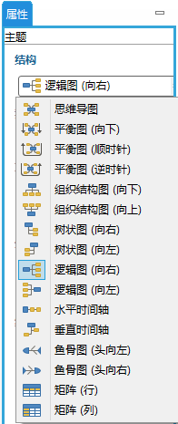
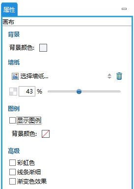

思维图结构
XMind有10种不同的结构供您选择使用。您不仅可以改变整个思维图的结构，而且还可以仅仅改变其中的一个分支。
改变思维图的结构:- 选中中心主题；
- 在菜单栏点击“窗口 - 属性”打开属性视图；
- 在结构列表中选择您需要的结构。

修改分支结构:- 选中分支主题的根主题；
- 打开属性视图；
- 在结构列表中选择您需要的结构。
注意:
- 您可以在一张思维图中使用多个结构。例如整张图是一个二维图，而一个分支为鱼骨图，另一个是逻辑图。
- 每个分支的根主题可以是分支主题，子主题或者某个分支主题。
以下步骤可帮您修改思维图的某些属性:

浏览思维图箭头键能帮助您在思维图中移动浏览主题。您可以通过以下两种方式放大/缩小思维图:
- 使用思维图编辑框下面的迷你工具栏缩放思维图。
- 使用快捷键: Ctrl + 鼠标滚轮 (Mac上使用Command键)。